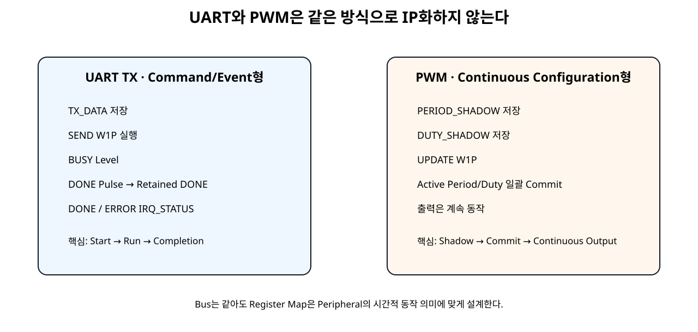
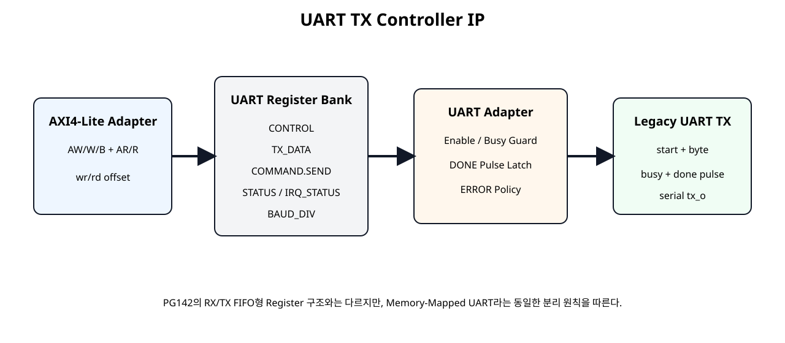
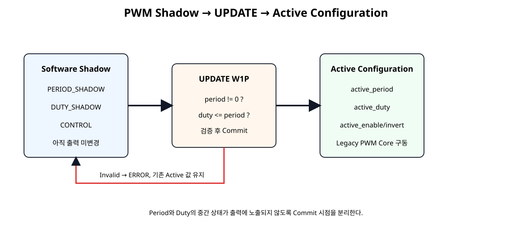

UART
Byte 저장 → SEND → BUSY → DONE/IRQ의 Event 흐름을 IP화한다.
Basys3 SoC + NPU · SoC 18
SoC 17의 기존 RTL IP화 원칙을 실제 주변장치형 RTL에 적용한다. UART TX는 START/BUSY/DONE 중심의 명령형 Peripheral, PWM은 PERIOD/DUTY를 지속적으로 유지하는 설정형 Peripheral이다. 두 기능을 같은 AXI4-Lite Bus에 연결하되 Register Map은 각 기능의 시간적 의미에 맞게 별도로 설계한다.
Byte 저장 → SEND → BUSY → DONE/IRQ의 Event 흐름을 IP화한다.
Period/Duty Shadow → UPDATE → Active 설정의 Commit 구조를 IP화한다.
검증된 AXI4-Lite Adapter와 Packaging 절차를 재사용한다.
기존 RTL을 AXI에 연결할 때 가장 중요한 판단은 “모든 Core를 같은 Register Map에 넣는 것”이 아니라 Core의 동작 방식에 맞는 Software Contract를 설계하는 것이다.

axi4lite_slave_adapter를 재사용한다.legacy_uart_tx_core는 AXI와 무관한 8N1 송신 Core이다. tx_start_i 1 Clock과 Byte를 받아 START → DATA 8bit → STOP 순서로 직렬 출력한다.
module legacy_uart_tx_core #(
parameter integer CLKS_PER_BIT = 868
)(
input wire clk,
input wire resetn,
input wire tx_start_i,
input wire [7:0] tx_data_i,
output reg tx_o,
output reg busy_o,
output reg done_pulse_o
);
localparam [2:0] ST_IDLE = 3'd0;
localparam [2:0] ST_START = 3'd1;
localparam [2:0] ST_DATA = 3'd2;
localparam [2:0] ST_STOP = 3'd3;
reg [2:0] state;
reg [31:0] clk_count;
reg [2:0] bit_index;
reg [7:0] data_latched;
always @(posedge clk) begin
if (!resetn) begin
state <= ST_IDLE;
clk_count <= 32'd0;
bit_index <= 3'd0;
data_latched <= 8'h00;
tx_o <= 1'b1;
busy_o <= 1'b0;
done_pulse_o <= 1'b0;
end else begin
done_pulse_o <= 1'b0;
case (state)
ST_IDLE: begin
tx_o <= 1'b1;
busy_o <= 1'b0;
clk_count <= 32'd0;
if (tx_start_i) begin
data_latched <= tx_data_i;
busy_o <= 1'b1;
tx_o <= 1'b0;
state <= ST_START;
end
end
ST_START: begin
busy_o <= 1'b1;
if (clk_count == CLKS_PER_BIT - 1) begin
clk_count <= 32'd0;
bit_index <= 3'd0;
tx_o <= data_latched[0];
state <= ST_DATA;
end else begin
clk_count <= clk_count + 1'b1;
end
end
ST_DATA: begin
busy_o <= 1'b1;
if (clk_count == CLKS_PER_BIT - 1) begin
clk_count <= 32'd0;
if (bit_index == 3'd7) begin
tx_o <= 1'b1;
state <= ST_STOP;
end else begin
bit_index <= bit_index + 1'b1;
tx_o <= data_latched[bit_index + 1'b1];
end
end else begin
clk_count <= clk_count + 1'b1;
end
end
ST_STOP: begin
busy_o <= 1'b1;
tx_o <= 1'b1;
if (clk_count == CLKS_PER_BIT - 1) begin
clk_count <= 32'd0;
busy_o <= 1'b0;
done_pulse_o <= 1'b1;
state <= ST_IDLE;
end else begin
clk_count <= clk_count + 1'b1;
end
end
default: begin
state <= ST_IDLE;
tx_o <= 1'b1;
busy_o <= 1'b0;
end
endcase
end
end
endmodule
| Offset | Register | Access | 의미 |
|---|---|---|---|
| 0x00 | CONTROL | RW | ENABLE |
| 0x04 | STATUS | RO | BUSY / DONE / ERROR |
| 0x08 | TX_DATA | RW | 전송할 8-bit Byte |
| 0x0C | COMMAND | W1P | SEND / CLEAR |
| 0x10 | IRQ_STATUS | W1C | DONE / ERROR Event |
| 0x14 | BAUD_DIV | RO | Clock per Bit Parameter |
| 0x18 | VERSION | RO | v1.0 |
| 0x1C | ID | RO | UTX1 |

module uart_tx_controller_adapter #(
parameter integer CLKS_PER_BIT = 868
)(
input wire clk,
input wire resetn,
input wire enable_i,
input wire send_pulse_i,
input wire clear_pulse_i,
input wire [7:0] tx_data_i,
output wire busy_o,
output reg done_o,
output reg error_o,
output reg irq_done_event_o,
output reg irq_error_event_o,
output wire uart_tx_o
);
wire legacy_busy;
wire legacy_done_pulse;
wire legacy_start;
assign legacy_start =
send_pulse_i &&
enable_i &&
!legacy_busy;
assign busy_o = legacy_busy;
legacy_uart_tx_core #(
.CLKS_PER_BIT(CLKS_PER_BIT)
) u_legacy_uart_tx_core (
.clk(clk),
.resetn(resetn),
.tx_start_i(legacy_start),
.tx_data_i(tx_data_i),
.tx_o(uart_tx_o),
.busy_o(legacy_busy),
.done_pulse_o(legacy_done_pulse)
);
always @(posedge clk) begin
if (!resetn) begin
done_o <= 1'b0;
error_o <= 1'b0;
irq_done_event_o <= 1'b0;
irq_error_event_o <= 1'b0;
end else begin
irq_done_event_o <= 1'b0;
irq_error_event_o <= 1'b0;
if (clear_pulse_i) begin
done_o <= 1'b0;
error_o <= 1'b0;
end
if (send_pulse_i) begin
done_o <= 1'b0;
if (!enable_i) begin
error_o <= 1'b1;
irq_error_event_o <= 1'b1;
end else if (legacy_busy) begin
error_o <= 1'b1;
irq_error_event_o <= 1'b1;
end else begin
error_o <= 1'b0;
end
end
if (legacy_done_pulse) begin
done_o <= 1'b1;
irq_done_event_o <= 1'b1;
end
end
end
endmodule
Software가 느린 Polling을 하더라도 1 Clock 완료 Pulse를 놓치지 않는다.
module uart_tx_axi4lite_ip #(
parameter integer C_S_AXI_ADDR_WIDTH = 32,
parameter integer CLKS_PER_BIT = 868
)(
input wire s_axi_aclk,
input wire s_axi_aresetn,
input wire [C_S_AXI_ADDR_WIDTH-1:0] s_axi_awaddr,
input wire [2:0] s_axi_awprot,
input wire s_axi_awvalid,
output wire s_axi_awready,
input wire [31:0] s_axi_wdata,
input wire [3:0] s_axi_wstrb,
input wire s_axi_wvalid,
output wire s_axi_wready,
output wire [1:0] s_axi_bresp,
output wire s_axi_bvalid,
input wire s_axi_bready,
input wire [C_S_AXI_ADDR_WIDTH-1:0] s_axi_araddr,
input wire [2:0] s_axi_arprot,
input wire s_axi_arvalid,
output wire s_axi_arready,
output wire [31:0] s_axi_rdata,
output wire [1:0] s_axi_rresp,
output wire s_axi_rvalid,
input wire s_axi_rready,
output wire uart_tx_o
);
wire wr_en;
wire [7:0] wr_offset;
wire [31:0] wr_data;
wire [3:0] wr_strb;
// (삭제) 조합 읽기 어댑터에는 rd_en 포트가 없다.
wire [7:0] rd_offset;
wire [31:0] rd_data;
wire enable;
wire send_pulse;
wire clear_pulse;
wire [7:0] tx_data;
wire [1:0] irq_status;
wire busy;
wire done;
wire error;
wire irq_done_event;
wire irq_error_event;
axi4lite_slave_adapter #(
.C_S_AXI_ADDR_WIDTH(C_S_AXI_ADDR_WIDTH)
) u_axi4lite_slave_adapter (
.s_axi_aclk(s_axi_aclk),
.s_axi_aresetn(s_axi_aresetn),
.s_axi_awaddr(s_axi_awaddr),
.s_axi_awprot(s_axi_awprot),
.s_axi_awvalid(s_axi_awvalid),
.s_axi_awready(s_axi_awready),
.s_axi_wdata(s_axi_wdata),
.s_axi_wstrb(s_axi_wstrb),
.s_axi_wvalid(s_axi_wvalid),
.s_axi_wready(s_axi_wready),
.s_axi_bresp(s_axi_bresp),
.s_axi_bvalid(s_axi_bvalid),
.s_axi_bready(s_axi_bready),
.s_axi_araddr(s_axi_araddr),
.s_axi_arprot(s_axi_arprot),
.s_axi_arvalid(s_axi_arvalid),
.s_axi_arready(s_axi_arready),
.s_axi_rdata(s_axi_rdata),
.s_axi_rresp(s_axi_rresp),
.s_axi_rvalid(s_axi_rvalid),
.s_axi_rready(s_axi_rready),
.wr_en(wr_en),
.wr_offset(wr_offset),
.wr_data(wr_data),
.wr_strb(wr_strb),
// (삭제) rd_offset / rd_data만 사용하는 조합 읽기 연결.
.rd_offset(rd_offset),
.rd_data(rd_data)
);
uart_tx_register_bank #(
.BAUD_DIV_VALUE(CLKS_PER_BIT)
) u_uart_tx_register_bank (
.clk(s_axi_aclk),
.resetn(s_axi_aresetn),
.wr_en(wr_en),
.wr_offset(wr_offset),
.wr_data(wr_data),
.wr_strb(wr_strb),
.rd_offset(rd_offset),
.rd_data(rd_data),
.busy_i(busy),
.done_i(done),
.error_i(error),
.irq_done_event_i(irq_done_event),
.irq_error_event_i(irq_error_event),
.enable_o(enable),
.send_pulse_o(send_pulse),
.clear_pulse_o(clear_pulse),
.tx_data_o(tx_data),
.irq_status_o(irq_status)
);
uart_tx_controller_adapter #(
.CLKS_PER_BIT(CLKS_PER_BIT)
) u_uart_tx_controller_adapter (
.clk(s_axi_aclk),
.resetn(s_axi_aresetn),
.enable_i(enable),
.send_pulse_i(send_pulse),
.clear_pulse_i(clear_pulse),
.tx_data_i(tx_data),
.busy_o(busy),
.done_o(done),
.error_o(error),
.irq_done_event_o(irq_done_event),
.irq_error_event_o(irq_error_event),
.uart_tx_o(uart_tx_o)
);
endmodule
uart_tx_o만 외부 기능 Port로 노출하고 내부 제어는 AXI Register로 수행한다.
#include "uart_tx_driver.h"
static int UartTxDrv_CheckReady(const UartTxDrv *InstancePtr)
{
if (InstancePtr == 0) {
return UARTTXDRV_ERR_PARAM;
}
if (InstancePtr->IsReady != UARTTXDRV_READY_MAGIC) {
return UARTTXDRV_ERR_NOT_READY;
}
return UARTTXDRV_OK;
}
int UartTxDrv_Initialize(UartTxDrv *InstancePtr, UINTPTR BaseAddress)
{
if (InstancePtr == 0) {
return UARTTXDRV_ERR_PARAM;
}
if ((BaseAddress & 0x3U) != 0U) {
return UARTTXDRV_ERR_PARAM;
}
InstancePtr->BaseAddress = BaseAddress;
InstancePtr->IsReady = 0U;
if (UartTx_ReadReg(BaseAddress, UARTTX_ID_OFFSET) != UARTTX_ID_VALUE) {
return UARTTXDRV_ERR_ID;
}
if (UartTx_ReadReg(BaseAddress, UARTTX_VERSION_OFFSET) != UARTTX_VERSION_VALUE) {
return UARTTXDRV_ERR_ID;
}
InstancePtr->IsReady = UARTTXDRV_READY_MAGIC;
return UARTTXDRV_OK;
}
int UartTxDrv_Enable(UartTxDrv *InstancePtr, u32 Enable)
{
int rc;
rc = UartTxDrv_CheckReady(InstancePtr);
if (rc != UARTTXDRV_OK) {
return rc;
}
UartTx_WriteReg(
InstancePtr->BaseAddress,
UARTTX_CONTROL_OFFSET,
(Enable != 0U) ? UARTTX_CONTROL_ENABLE_MASK : 0U
);
return UARTTXDRV_OK;
}
int UartTxDrv_IsBusy(UartTxDrv *InstancePtr)
{
int rc;
u32 status;
rc = UartTxDrv_CheckReady(InstancePtr);
if (rc != UARTTXDRV_OK) {
return rc;
}
status = UartTx_ReadReg(
InstancePtr->BaseAddress,
UARTTX_STATUS_OFFSET
);
return ((status & UARTTX_STATUS_BUSY_MASK) != 0U) ? 1 : 0;
}
int UartTxDrv_Clear(UartTxDrv *InstancePtr)
{
int rc;
rc = UartTxDrv_CheckReady(InstancePtr);
if (rc != UARTTXDRV_OK) {
return rc;
}
UartTx_WriteReg(
InstancePtr->BaseAddress,
UARTTX_COMMAND_OFFSET,
UARTTX_COMMAND_CLEAR_MASK
);
UartTx_WriteReg(
InstancePtr->BaseAddress,
UARTTX_IRQ_STATUS_OFFSET,
UARTTX_IRQ_DONE_MASK | UARTTX_IRQ_ERROR_MASK
);
return UARTTXDRV_OK;
}
int UartTxDrv_SendBlocking(
UartTxDrv *InstancePtr,
u8 Data,
u32 PollLimit
)
{
u32 k;
u32 status;
int rc;
rc = UartTxDrv_CheckReady(InstancePtr);
if (rc != UARTTXDRV_OK) {
return rc;
}
if (PollLimit == 0U) {
return UARTTXDRV_ERR_PARAM;
}
status = UartTx_ReadReg(
InstancePtr->BaseAddress,
UARTTX_STATUS_OFFSET
);
if ((status & UARTTX_STATUS_BUSY_MASK) != 0U) {
return UARTTXDRV_ERR_BUSY;
}
rc = UartTxDrv_Clear(InstancePtr);
if (rc != UARTTXDRV_OK) {
return rc;
}
rc = UartTxDrv_Enable(InstancePtr, 1U);
if (rc != UARTTXDRV_OK) {
return rc;
}
UartTx_WriteReg(
InstancePtr->BaseAddress,
UARTTX_TX_DATA_OFFSET,
(u32)Data
);
UartTx_WriteReg(
InstancePtr->BaseAddress,
UARTTX_COMMAND_OFFSET,
UARTTX_COMMAND_SEND_MASK
);
for (k = 0U; k < PollLimit; k++) {
status = UartTx_ReadReg(
InstancePtr->BaseAddress,
UARTTX_STATUS_OFFSET
);
if ((status & UARTTX_STATUS_ERROR_MASK) != 0U) {
return UARTTXDRV_ERR_HW;
}
if ((status & UARTTX_STATUS_DONE_MASK) != 0U) {
return UARTTXDRV_OK;
}
}
return UARTTXDRV_ERR_TIMEOUT;
}
| 검증 | 상태 |
|---|---|
| Host Driver Mock Compile/Run | 실행 검증 |
| Legacy UART Core Testbench | Vivado xsim 대상 |
| UART AXI IP Testbench | ID/BAUD/SEND/DONE/IRQ/Error Self-Checking |
PASS: UART Initialize
PASS: UART SendBlocking
PASS: UART TX_DATA
PASS: UART Clear
PASS: UART STATUS clear
PASS: UART IRQ clear
PASS: UART Timeout
SOC18 UART DRIVER MOCK TEST: PASSlegacy_pwm_core는 Period, Duty, Enable, Invert를 받아 지속적으로 PWM을 생성한다. START/DONE 개념이 없는 설정형 Core이다.
module legacy_pwm_core (
input wire clk,
input wire resetn,
input wire enable_i,
input wire invert_i,
input wire [31:0] period_i,
input wire [31:0] duty_i,
output wire pwm_o,
output wire active_o
);
reg [31:0] counter;
wire raw_pwm;
assign active_o = enable_i && (period_i != 0);
assign raw_pwm =
active_o &&
(counter < duty_i);
assign pwm_o =
invert_i ? ~raw_pwm : raw_pwm;
always @(posedge clk) begin
if (!resetn) begin
counter <= 32'd0;
end else if (!active_o) begin
counter <= 32'd0;
end else if (counter >= period_i - 1'b1) begin
counter <= 32'd0;
end else begin
counter <= counter + 1'b1;
end
end
endmodule
| Offset | Register | Access | 의미 |
|---|---|---|---|
| 0x00 | CONTROL | RW | ENABLE / INVERT |
| 0x04 | PERIOD_SHADOW | RW | 다음 Period |
| 0x08 | DUTY_SHADOW | RW | 다음 Duty |
| 0x0C | COMMAND | W1P | UPDATE / CLEAR_ERROR |
| 0x10 | STATUS | RO | ACTIVE / ERROR |
| 0x14 | ACTIVE_PERIOD | RO | 현재 적용값 |
| 0x18 | ACTIVE_DUTY | RO | 현재 적용값 |
| 0x1C | ID | RO | PWM1 |
| 0x20 | VERSION | RO | v1.0 |
Software가 Period와 Duty를 두 번의 AXI Write로 변경하면 중간 순간에는 새 Period + 옛 Duty 또는 옛 Period + 새 Duty 조합이 존재한다. 이 값을 즉시 PWM Core에 연결하면 의도하지 않은 Pulse가 만들어질 수 있다.

module pwm_controller_adapter (
input wire clk,
input wire resetn,
input wire enable_i,
input wire invert_i,
input wire [31:0] period_shadow_i,
input wire [31:0] duty_shadow_i,
input wire update_pulse_i,
input wire clear_error_pulse_i,
output wire active_o,
output reg error_o,
output reg [31:0] active_period_o,
output reg [31:0] active_duty_o,
output wire pwm_o
);
reg active_enable;
reg active_invert;
legacy_pwm_core u_legacy_pwm_core (
.clk(clk),
.resetn(resetn),
.enable_i(active_enable),
.invert_i(active_invert),
.period_i(active_period_o),
.duty_i(active_duty_o),
.pwm_o(pwm_o),
.active_o(active_o)
);
always @(posedge clk) begin
if (!resetn) begin
active_enable <= 1'b0;
active_invert <= 1'b0;
active_period_o <= 32'd1000;
active_duty_o <= 32'd500;
error_o <= 1'b0;
end else begin
if (clear_error_pulse_i) begin
error_o <= 1'b0;
end
if (update_pulse_i) begin
if (
(period_shadow_i == 0) ||
(duty_shadow_i > period_shadow_i)
) begin
error_o <= 1'b1;
end else begin
active_enable <= enable_i;
active_invert <= invert_i;
active_period_o <= period_shadow_i;
active_duty_o <= duty_shadow_i;
error_o <= 1'b0;
end
end
end
end
endmodule
| 조건 | 동작 |
|---|---|
period == 0 | ERROR, Commit 거부 |
duty > period | ERROR, Commit 거부 |
| 정상 값 | Active Period/Duty/Enable/Invert 동시 갱신 |
| 잘못된 UPDATE | 기존 Active 설정 유지 |
module pwm_axi4lite_ip #(
parameter integer C_S_AXI_ADDR_WIDTH = 32
)(
input wire s_axi_aclk,
input wire s_axi_aresetn,
input wire [C_S_AXI_ADDR_WIDTH-1:0] s_axi_awaddr,
input wire [2:0] s_axi_awprot,
input wire s_axi_awvalid,
output wire s_axi_awready,
input wire [31:0] s_axi_wdata,
input wire [3:0] s_axi_wstrb,
input wire s_axi_wvalid,
output wire s_axi_wready,
output wire [1:0] s_axi_bresp,
output wire s_axi_bvalid,
input wire s_axi_bready,
input wire [C_S_AXI_ADDR_WIDTH-1:0] s_axi_araddr,
input wire [2:0] s_axi_arprot,
input wire s_axi_arvalid,
output wire s_axi_arready,
output wire [31:0] s_axi_rdata,
output wire [1:0] s_axi_rresp,
output wire s_axi_rvalid,
input wire s_axi_rready,
output wire pwm_o
);
wire wr_en;
wire [7:0] wr_offset;
wire [31:0] wr_data;
wire [3:0] wr_strb;
// (삭제) 조합 읽기 어댑터에는 rd_en 포트가 없다.
wire [7:0] rd_offset;
wire [31:0] rd_data;
wire enable;
wire invert;
wire [31:0] period_shadow;
wire [31:0] duty_shadow;
wire update_pulse;
wire clear_error_pulse;
wire active;
wire error;
wire [31:0] active_period;
wire [31:0] active_duty;
axi4lite_slave_adapter #(
.C_S_AXI_ADDR_WIDTH(C_S_AXI_ADDR_WIDTH)
) u_axi4lite_slave_adapter (
.s_axi_aclk(s_axi_aclk),
.s_axi_aresetn(s_axi_aresetn),
.s_axi_awaddr(s_axi_awaddr),
.s_axi_awprot(s_axi_awprot),
.s_axi_awvalid(s_axi_awvalid),
.s_axi_awready(s_axi_awready),
.s_axi_wdata(s_axi_wdata),
.s_axi_wstrb(s_axi_wstrb),
.s_axi_wvalid(s_axi_wvalid),
.s_axi_wready(s_axi_wready),
.s_axi_bresp(s_axi_bresp),
.s_axi_bvalid(s_axi_bvalid),
.s_axi_bready(s_axi_bready),
.s_axi_araddr(s_axi_araddr),
.s_axi_arprot(s_axi_arprot),
.s_axi_arvalid(s_axi_arvalid),
.s_axi_arready(s_axi_arready),
.s_axi_rdata(s_axi_rdata),
.s_axi_rresp(s_axi_rresp),
.s_axi_rvalid(s_axi_rvalid),
.s_axi_rready(s_axi_rready),
.wr_en(wr_en),
.wr_offset(wr_offset),
.wr_data(wr_data),
.wr_strb(wr_strb),
// (삭제) rd_offset / rd_data만 사용하는 조합 읽기 연결.
.rd_offset(rd_offset),
.rd_data(rd_data)
);
pwm_register_bank u_pwm_register_bank (
.clk(s_axi_aclk),
.resetn(s_axi_aresetn),
.wr_en(wr_en),
.wr_offset(wr_offset),
.wr_data(wr_data),
.wr_strb(wr_strb),
.rd_offset(rd_offset),
.rd_data(rd_data),
.active_i(active),
.error_i(error),
.active_period_i(active_period),
.active_duty_i(active_duty),
.enable_o(enable),
.invert_o(invert),
.period_shadow_o(period_shadow),
.duty_shadow_o(duty_shadow),
.update_pulse_o(update_pulse),
.clear_error_pulse_o(clear_error_pulse)
);
pwm_controller_adapter u_pwm_controller_adapter (
.clk(s_axi_aclk),
.resetn(s_axi_aresetn),
.enable_i(enable),
.invert_i(invert),
.period_shadow_i(period_shadow),
.duty_shadow_i(duty_shadow),
.update_pulse_i(update_pulse),
.clear_error_pulse_i(clear_error_pulse),
.active_o(active),
.error_o(error),
.active_period_o(active_period),
.active_duty_o(active_duty),
.pwm_o(pwm_o)
);
endmodule
Top은 공통 AXI Adapter, PWM Register Bank, PWM Adapter만 연결한다.
#include "pwm_driver.h"
static int PwmDrv_CheckReady(const PwmDrv *InstancePtr)
{
if (InstancePtr == 0) {
return PWMDRV_ERR_PARAM;
}
if (InstancePtr->IsReady != PWMDRV_READY_MAGIC) {
return PWMDRV_ERR_NOT_READY;
}
return PWMDRV_OK;
}
int PwmDrv_Initialize(PwmDrv *InstancePtr, UINTPTR BaseAddress)
{
if (InstancePtr == 0) {
return PWMDRV_ERR_PARAM;
}
if ((BaseAddress & 0x3U) != 0U) {
return PWMDRV_ERR_PARAM;
}
InstancePtr->BaseAddress = BaseAddress;
InstancePtr->IsReady = 0U;
if (Pwm_ReadReg(BaseAddress, PWM_ID_OFFSET) != PWM_ID_VALUE) {
return PWMDRV_ERR_ID;
}
if (Pwm_ReadReg(BaseAddress, PWM_VERSION_OFFSET) != PWM_VERSION_VALUE) {
return PWMDRV_ERR_ID;
}
InstancePtr->IsReady = PWMDRV_READY_MAGIC;
return PWMDRV_OK;
}
int PwmDrv_ClearError(PwmDrv *InstancePtr)
{
int rc;
rc = PwmDrv_CheckReady(InstancePtr);
if (rc != PWMDRV_OK) {
return rc;
}
Pwm_WriteReg(
InstancePtr->BaseAddress,
PWM_COMMAND_OFFSET,
PWM_COMMAND_CLEAR_ERR_MASK
);
return PWMDRV_OK;
}
int PwmDrv_Configure(
PwmDrv *InstancePtr,
u32 PeriodClocks,
u32 DutyClocks,
u32 Enable,
u32 Invert
)
{
u32 control;
u32 status;
int rc;
rc = PwmDrv_CheckReady(InstancePtr);
if (rc != PWMDRV_OK) {
return rc;
}
if ((PeriodClocks == 0U) || (DutyClocks > PeriodClocks)) {
return PWMDRV_ERR_PARAM;
}
rc = PwmDrv_ClearError(InstancePtr);
if (rc != PWMDRV_OK) {
return rc;
}
control = 0U;
if (Enable != 0U) {
control |= PWM_CONTROL_ENABLE_MASK;
}
if (Invert != 0U) {
control |= PWM_CONTROL_INVERT_MASK;
}
Pwm_WriteReg(
InstancePtr->BaseAddress,
PWM_CONTROL_OFFSET,
control
);
Pwm_WriteReg(
InstancePtr->BaseAddress,
PWM_PERIOD_SHADOW_OFFSET,
PeriodClocks
);
Pwm_WriteReg(
InstancePtr->BaseAddress,
PWM_DUTY_SHADOW_OFFSET,
DutyClocks
);
Pwm_WriteReg(
InstancePtr->BaseAddress,
PWM_COMMAND_OFFSET,
PWM_COMMAND_UPDATE_MASK
);
status = Pwm_ReadReg(
InstancePtr->BaseAddress,
PWM_STATUS_OFFSET
);
if ((status & PWM_STATUS_ERROR_MASK) != 0U) {
return PWMDRV_ERR_HW;
}
return PWMDRV_OK;
}
int PwmDrv_Disable(PwmDrv *InstancePtr)
{
u32 active_period;
u32 active_duty;
int rc;
rc = PwmDrv_CheckReady(InstancePtr);
if (rc != PWMDRV_OK) {
return rc;
}
active_period = Pwm_ReadReg(
InstancePtr->BaseAddress,
PWM_ACTIVE_PERIOD_OFFSET
);
active_duty = Pwm_ReadReg(
InstancePtr->BaseAddress,
PWM_ACTIVE_DUTY_OFFSET
);
return PwmDrv_Configure(
InstancePtr,
active_period,
active_duty,
0U,
0U
);
}
PASS: PWM Initialize
PASS: PWM Configure 25%
PASS: PWM active period
PASS: PWM active duty
PASS: PWM active
PASS: PWM invalid duty
PASS: PWM Disable
PASS: PWM inactive
SOC18 PWM DRIVER MOCK TEST: PASSAXI Self-Checking Testbench는 Shadow만 썼을 때 Active 값이 바뀌지 않는지, UPDATE 후 일괄 반영되는지, 잘못된 UPDATE에서 기존 Active 값이 보존되는지를 확인한다.
UART와 PWM 모두 SoC 12의 axi4lite_slave_adapter.v를 바이트 단위 동일하게 재사용한다.
| UART | PWM |
|---|---|
| SEND가 명확한 Event | 출력이 계속 동작 |
| BUSY/DONE가 중요 | Active Configuration이 중요 |
| TX_DATA 한 Byte | Period/Duty 두 값의 일관성이 중요 |
| DONE IRQ가 자연스러움 | Atomic UPDATE가 자연스러움 |
따라서 “이전 Register Map을 무조건 복사”하지 않고, Software가 Peripheral을 어떻게 사용해야 하는지부터 설계한다.
Block Design에서 두 IP 출력 Port를 External로 만들고 이름을 uart_tx_o, pwm_o로 지정하면 다음 XDC 예제를 사용할 수 있다.
## SoC 18 Basys3 demo ports
## External port names in the Block Design wrapper must match these names.
## 100 MHz Clock
set_property -dict { PACKAGE_PIN W5 IOSTANDARD LVCMOS33 } [get_ports clk]
create_clock -add -name sys_clk_pin -period 10.00 -waveform {0 5} [get_ports clk]
## Center Button Reset
set_property -dict { PACKAGE_PIN U18 IOSTANDARD LVCMOS33 } [get_ports btnC]
## Custom UART TX -> Basys3 USB-UART RX path
set_property -dict { PACKAGE_PIN A18 IOSTANDARD LVCMOS33 } [get_ports uart_tx_o]
## Custom PWM -> LED15
set_property -dict { PACKAGE_PIN L1 IOSTANDARD LVCMOS33 } [get_ports pwm_o]
UART TX는 Basys3 USB-UART의 FPGA→PC 방향인 A18에, PWM은 LED15 L1에 연결하는 교육용 예이다.
100 MHz Clock에서 Period를 100,000 Clock으로 설정하면:
Duty를 25,000 Clock으로 설정하면 25,000 / 100,000 → 25%이다.
#include "uart_tx_driver.h"
#include "pwm_driver.h"
/*
* SoC 18 board-level software example.
*
* UartBaseAddress and PwmBaseAddress come from the actual
* Vivado/Vitis hardware platform. No fictional XPAR macro is used here.
*/
int Soc18_UartPwmDemo(
UINTPTR UartBaseAddress,
UINTPTR PwmBaseAddress
)
{
UartTxDrv uart;
PwmDrv pwm;
int rc;
rc = UartTxDrv_Initialize(
&uart,
UartBaseAddress
);
if (rc != UARTTXDRV_OK) {
return rc;
}
rc = PwmDrv_Initialize(
&pwm,
PwmBaseAddress
);
if (rc != PWMDRV_OK) {
return rc;
}
/*
* 100 MHz clock example:
* Period 100,000 clocks -> 1 kHz PWM
* Duty 25,000 clocks -> 25 %
*/
rc = PwmDrv_Configure(
&pwm,
100000U,
25000U,
1U,
0U
);
if (rc != PWMDRV_OK) {
return rc;
}
/* Send ASCII 'A' through the custom UART TX IP. */
rc = UartTxDrv_SendBlocking(
&uart,
(u8)'A',
2000000U
);
if (rc != UARTTXDRV_OK) {
return rc;
}
return 0;
}
실제 Base Address는 새 Vivado Address Editor/XSA에서 생성된 값을 전달한다.
uart_tx_ip_1_0/
├── hdl/
│ ├── legacy_uart_tx_core.v
│ ├── uart_tx_controller_adapter.v
│ ├── uart_tx_register_bank.v
│ ├── axi4lite_slave_adapter.v
│ └── uart_tx_axi4lite_ip.v
├── testbench/
│ └── tb_legacy_uart_tx_core.v
├── drivers/uart_tx_v1_0/src/
│ ├── uart_tx_driver.c
│ ├── uart_tx_driver.h
│ └── uart_tx_regmap.h
├── examples/
│ └── test_uart_tx_driver_mock.c
├── doc/
└── tcl/
pwm_controller_ip_1_0/
├── hdl/
│ ├── legacy_pwm_core.v
│ ├── pwm_controller_adapter.v
│ ├── pwm_register_bank.v
│ ├── axi4lite_slave_adapter.v
│ └── pwm_axi4lite_ip.v
├── testbench/
│ └── tb_legacy_pwm_core.v
├── drivers/pwm_controller_v1_0/src/
│ ├── pwm_driver.c
│ ├── pwm_driver.h
│ └── pwm_regmap.h
├── examples/
│ └── test_pwm_driver_mock.c
├── doc/
└── tcl/
SoC 16/17과 동일하게 기존 RTL을 다시 생성하지 않고 현재 Source를 Package한다. Vivado 2026.1의 IP Packager는 Top HDL을 Parsing하여 Ports/Interfaces를 구성한다.
| IP | Packaging Top | 권장 Name |
|---|---|---|
| UART TX | uart_tx_axi4lite_ip | uart_tx_ip |
| PWM | pwm_axi4lite_ip | pwm_controller_ip |
두 IP는 각각 독립 Base Address를 갖고 Software Driver Instance도 각각 독립적으로 초기화한다.
이번 장은 TX 경로를 명확히 보기 위해 UART TX만 IP화했다. RX를 추가할 때는 단순 DATA Register보다 FIFO 또는 data/valid/ready Byte Stream Interface가 유리하다.
AMD AXI UART Lite도 RX/TX FIFO와 Status/Control Register를 분리하는 구조를 사용한다.
AMD AXI Timer 역시 PWM Mode에서 두 Timer를 사용해 Period와 Output Width를 구성한다. Custom PWM에서도 핵심 설계축은 동일하게 Period와 Duty/Width의 일관된 설정이다.
| 증상 | 원인 후보 | 확인 |
|---|---|---|
| UART가 SEND 직후 Error | ENABLE=0 또는 BUSY | CONTROL/STATUS |
| UART DONE을 못 봄 | Pulse를 직접 Software Status로 사용 | Adapter retained DONE |
| UART Baud가 이상함 | CLKS_PER_BIT와 System Clock 불일치 | BAUD_DIV, Clock |
| PWM Write 중 Pulse가 흔들림 | Shadow 없이 Live Register 직접 연결 | UPDATE Commit 구조 |
| PWM Duty가 Period보다 큼 | 설정 검증 누락 | Adapter Error Policy |
| 잘못된 UPDATE 후 출력도 바뀜 | 검증 전에 Active Register 변경 | Valid 후 Commit |
| 두 IP Driver가 같은 Base 사용 | Address Editor/Instance 혼동 | UART/PWM 독립 Base |
| Top에 기능 정책이 존재 | Wrapper와 Adapter 역할 혼합 | 정책은 Adapter/Register Bank |
| 문서 | 확인 항목 |
|---|---|
| AMD UG1118 · Packaging Your Current Project · 2026.1 | 기존 RTL Project의 Custom IP Packaging |
| AMD UG1118 · Ports and Interfaces · 2026.1 | Top HDL Parsing과 Bus Interface 구성 |
| AMD PG142 · AXI UART Lite | RX/TX FIFO, Status/Control Register와 Memory-Mapped UART 구조 비교 |
| AMD PG079 · AXI Timer PWM Mode · 2025-08-15 | Period/Output Width를 이용한 PWM 구성 |
| AMD PG079 · Operation Overview | AXI4-Lite Register Block + Counter + PWM Block 분리 구조 |